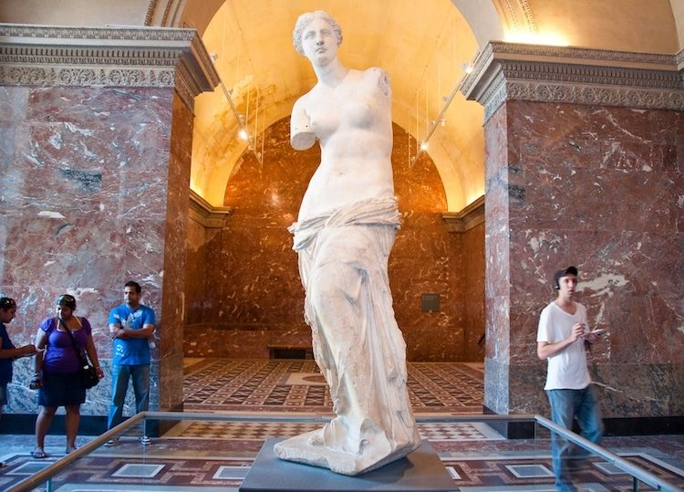
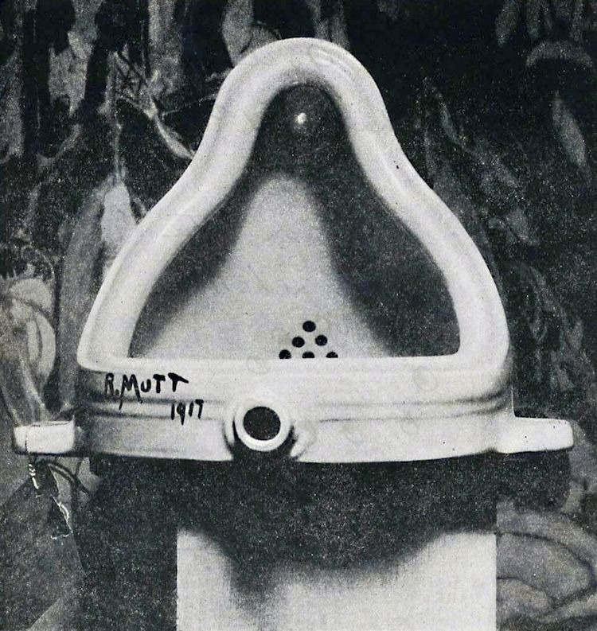
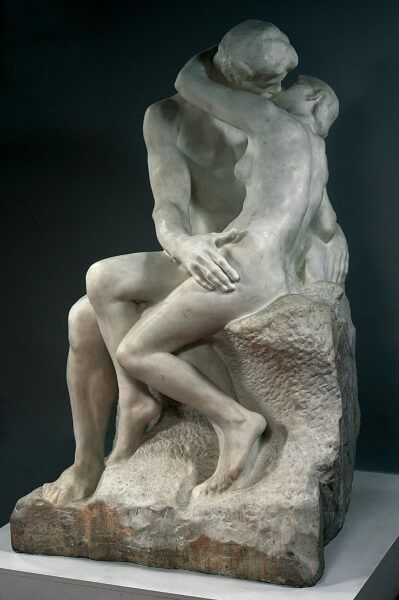
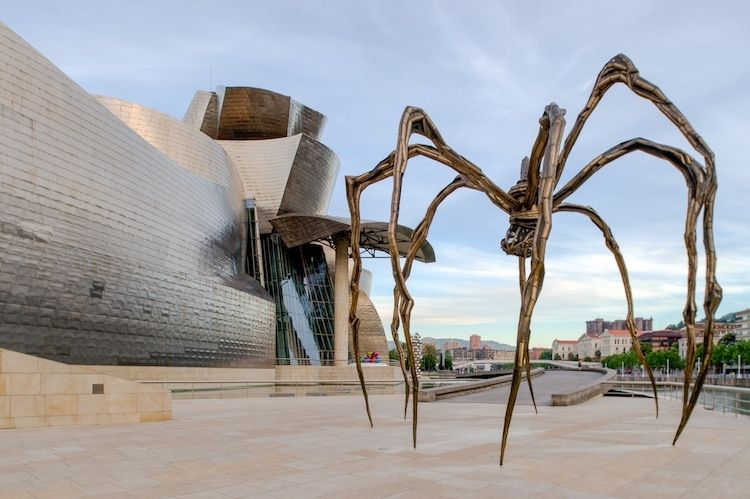
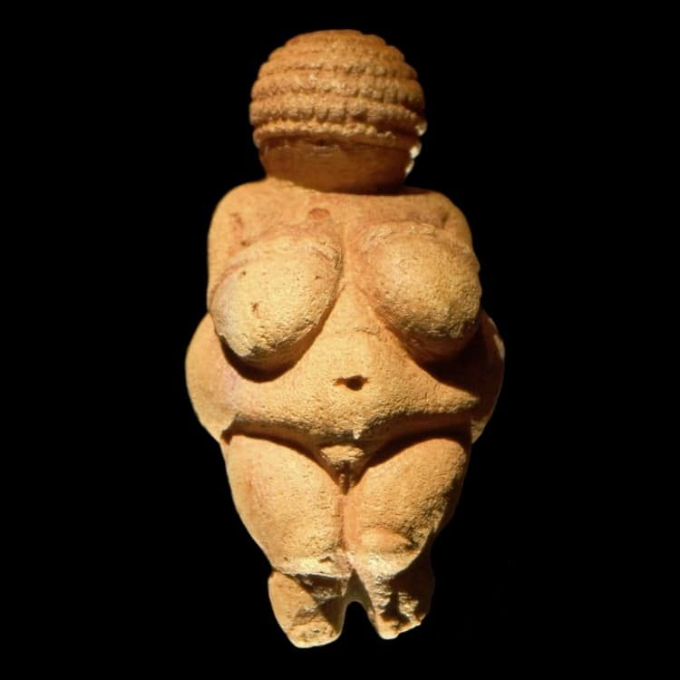
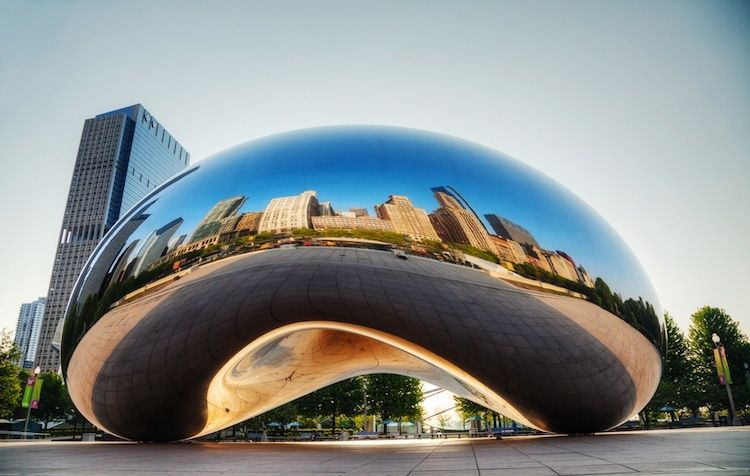
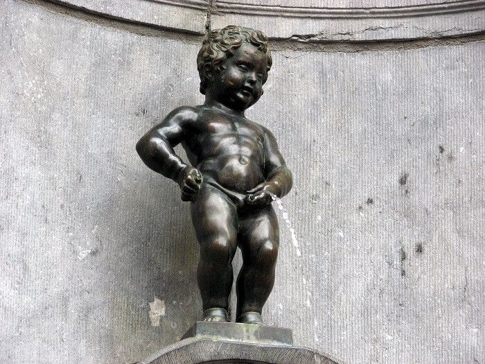
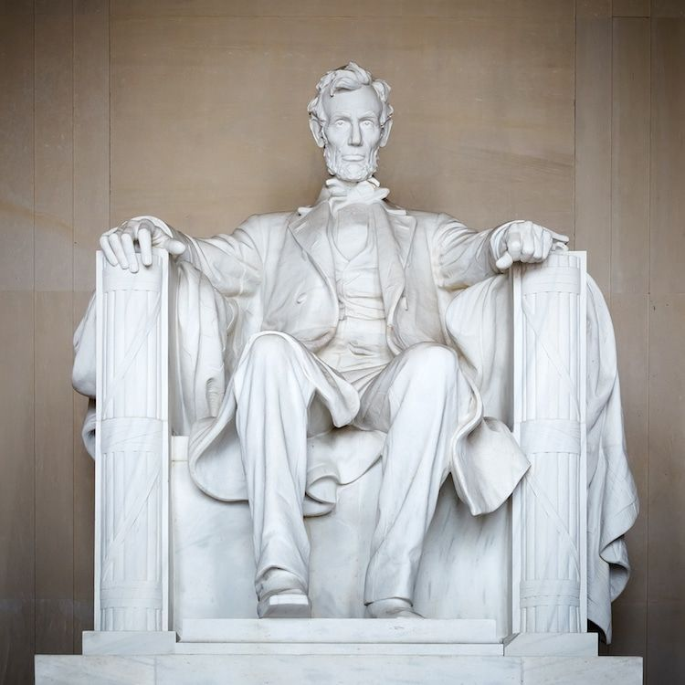
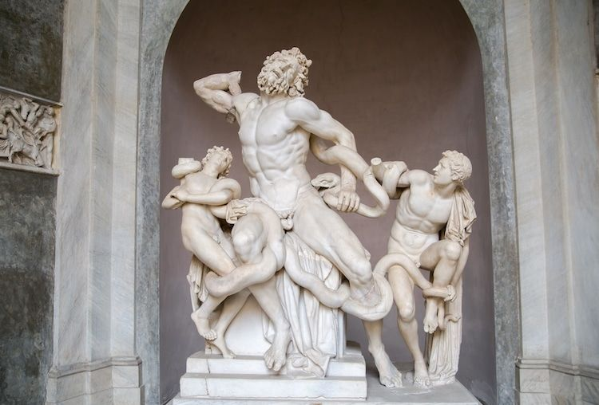
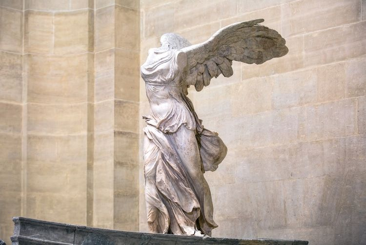

Галерея мистецтва
Теракотові воїни — це колекція статуй в Сіані, Китай.

Венера Мілоська.

«Фонтан» у 1917.

Огюста Родена — це скульптура «Поцілунок».

Монументальна скульптура Луїзи Буржуа «Мама».

Віллендорфська Венера — це фігурка висотою 11 см.

Скульптор Аніш Капур — "Хмарні ворота" у 2004.

Скульптура, що датується бл. 1350 до н. е.

"Хлопчик, що пісяє" — мініатюрна бронзова статуя-фонтан в центрі Брюсселя.

Меморіал Лінкольна від голови до п'ят становить 5,79 м і важить 175 тонн.

Лаокоон та його сини.

Скульптура Ніки (бл. 190 до н. е.), грецької богині перемоги.